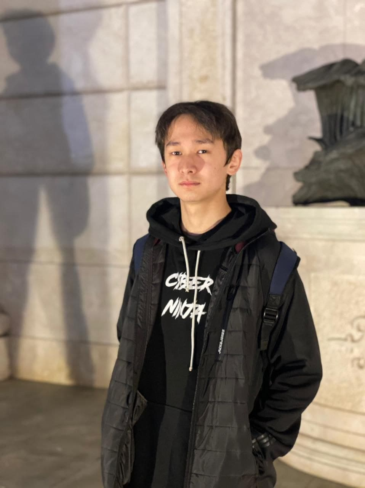
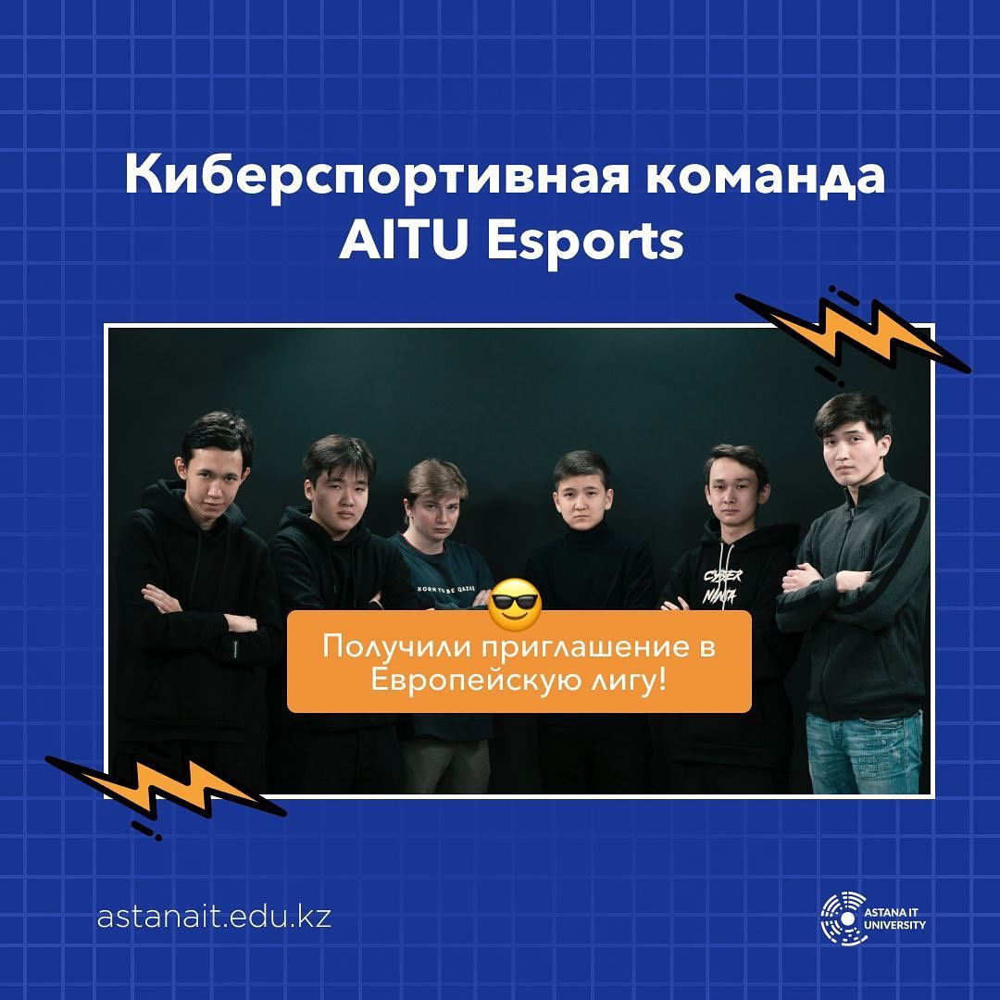
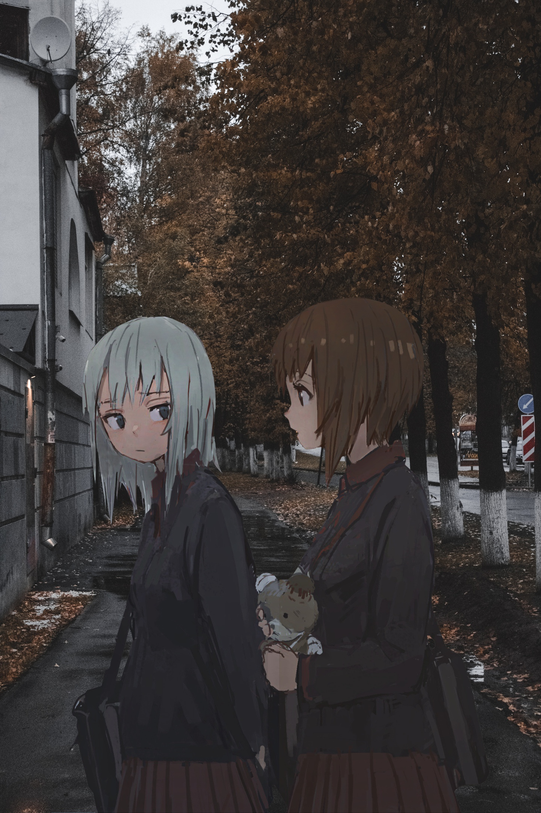

Mirlan "SadSkyYyy" Utebayev

On this page, I will introduce you to myself. In short, I am studying at
Astana IT University, majoring in cybersecurity. I play games, watch anime.
School
From the eighth grade I started to get involved in programming because of my computer science teachers, in the ninth grade I planned to enter the cybersecurity specialty. When I moved to Astana (in the second half of 2018), I started to like this topic related to programming even more, and I began to prepare for entering universities specifically for specialties related to IT.
Dota 2

I have been playing Dota since 2015, during this period of time, I realized that I am pleased to play as a support. At the moment, I am among the 1 percent of players in the world by rating (at the moment, out of four million players). I also want to note that now I play for the university Dota team.
Anime

I really enjoy watching anime, more than serials and films, because in my opinion, anime can be realized more opportunities than filming. Below I will provide you with my top anime. By the way, because of the anime, I came up with the nickname SadSkyYyy
Top anime
| Place |
Name anime |
| 1 |
OreGairu |
| 2 |
Aobuta |
| 3 |
Tokyo Ghoul |